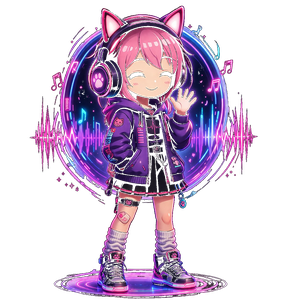

Locutora · Shojo Heart · Voz de la frecuencia
Hikari
Sabía que la estación existía antes de conocer a Akira. Llegó primero — lo estaba esperando sin saberlo. Serena pero con opiniones firmes.
Radio Anime Online · 24/7
La primera radio anime donde tú decides lo que suena. Vota, escucha y sé parte del universo OtakuWave.
🎵 Escucha ahora

🎵 Opening oficial de Demon Slayer: Kimetsu no Yaiba • Gurenge por LiSA • +161M de reproducciones
Los guardianes de la frecuencia
No son presentadores. Son los protagonistas de un universo que la comunidad co-escribe cada semana.
Sabía que la estación existía antes de conocer a Akira. Llegó primero — lo estaba esperando sin saberlo. Serena pero con opiniones firmes.
Coleccionista de openings desde los 12 años. Encontró la frecuencia de madrugada siguiendo una señal que no debía existir.
Conócelos en acción
Mira los intros de Akira e Hikari — los guardianes que transmiten la frecuencia 24/7.
Horario
Cada franja tiene su propio universo sonoro.
Openings energéticos y J-pop para arrancar el día.
Noticias, Otaku News, La Frecuencia Decide.
El Tribunal Otaku, Batalla Anime.
Openings y endings con historia oscura.
Lo-fi, endings suaves e instrumentales.
Transmisión semanal en vivo. La comunidad elige el tema.
El universo OtakuWave
Cada sección es un formato con mecánica de engagement propia.
Openings y endings icónicos elegidos por la comunidad.
Noticias del mundo anime filtradas por Akira e Hikari.
Los mensajes y creaciones de la comunidad se vuelven parte del aire.
El debate otaku más épico de la semana.
Endings románticos, slice of life y el espacio donde Hikari manda.
Soundtracks anime-gaming, noticias y el cruce entre dos universos.
Formato propio
Tu voto tiene consecuencias reales. El resultado cambia la programación de mañana.
Niveles de la frecuencia
No escuchas OtakuWave — la construyes. Cada participación sube tu nivel en la frecuencia.
Avanzas según participación, no según lo que pagas. Votar, comentar, sugerir canciones y participar en decisiones narrativas de Akira e Hikari suma nivel.
Cada plataforma tiene un rol específico en el ecosistema OtakuWave.
Unirme ahoraLa comunidad habla
Los mensajes y creaciones de la comunidad se vuelven parte del aire.
📬 Mantente en sintonía
Recibe openings, noticias y sorpresas directamente en tu correo